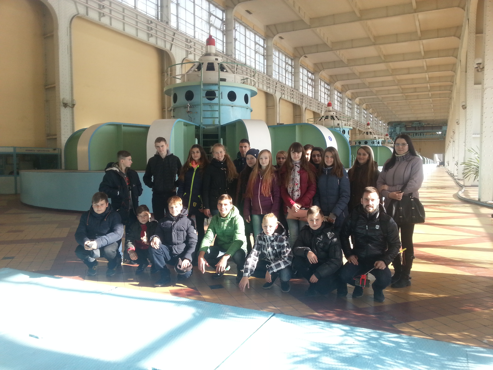
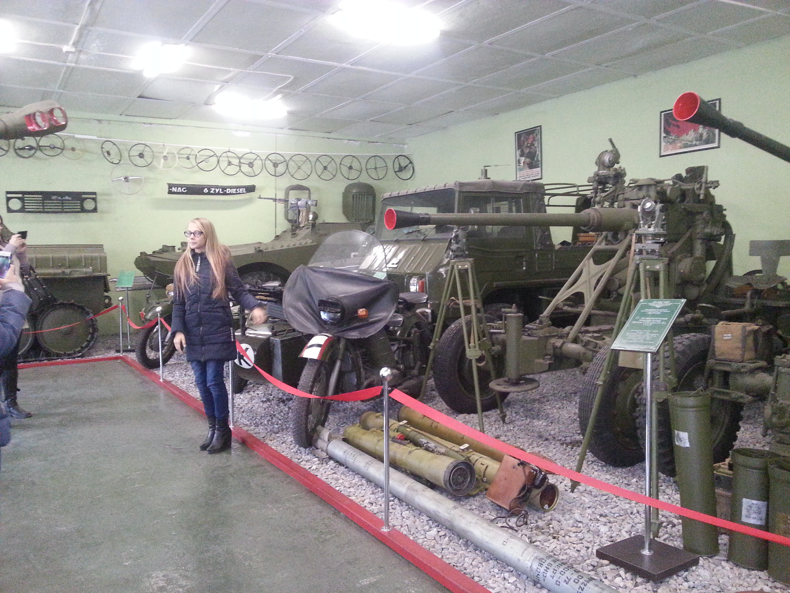
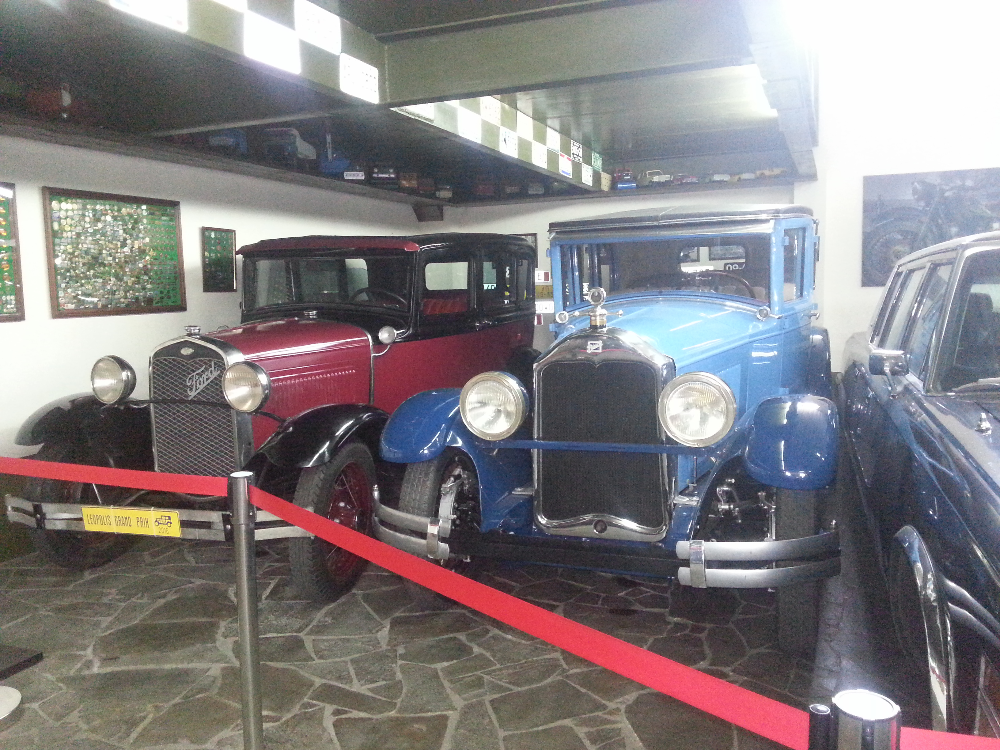
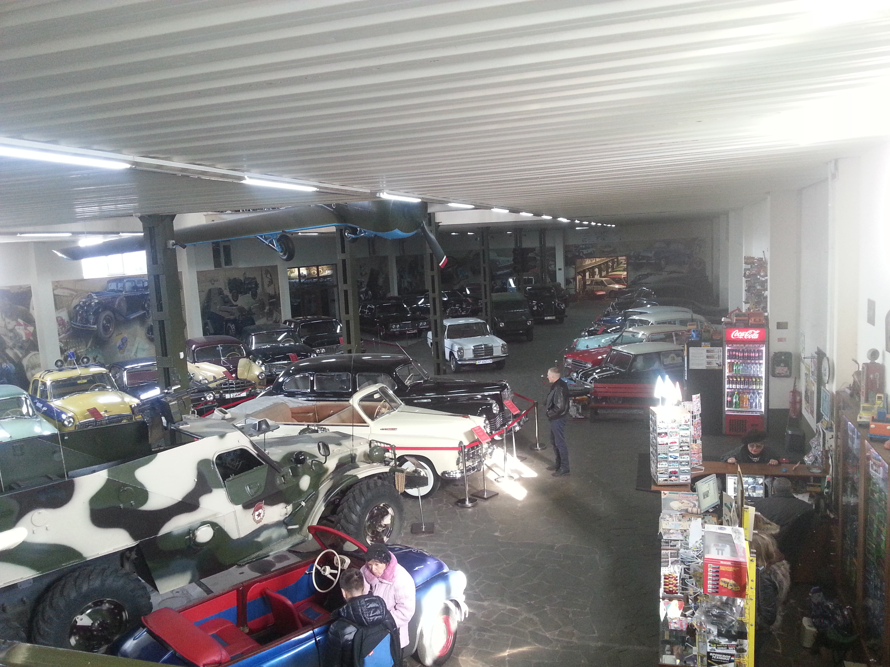
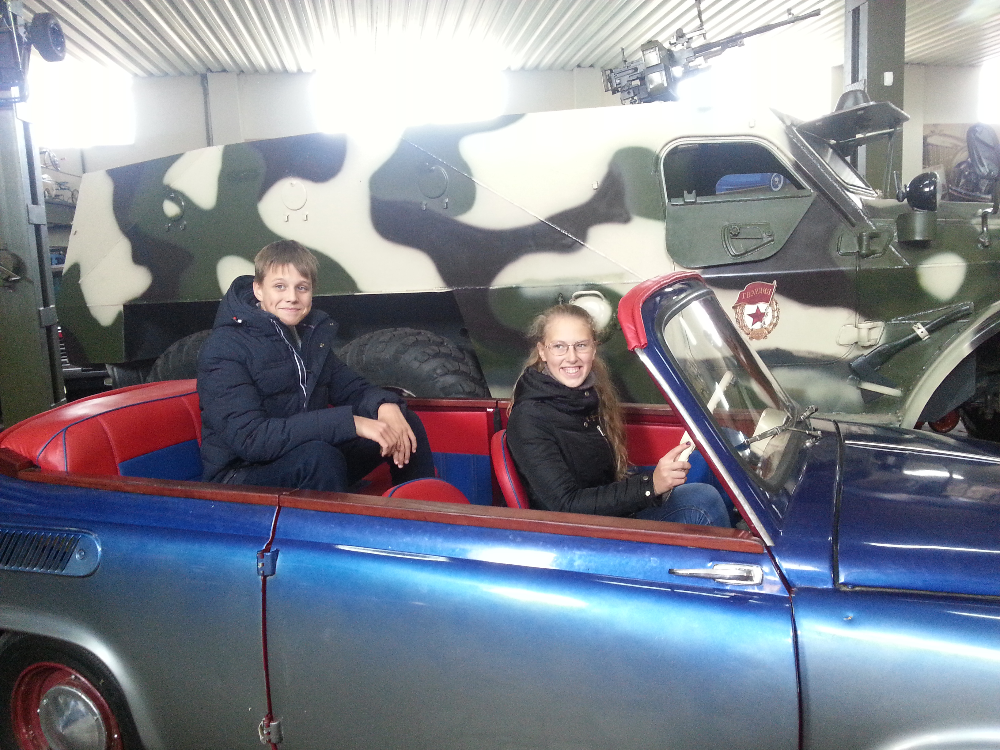
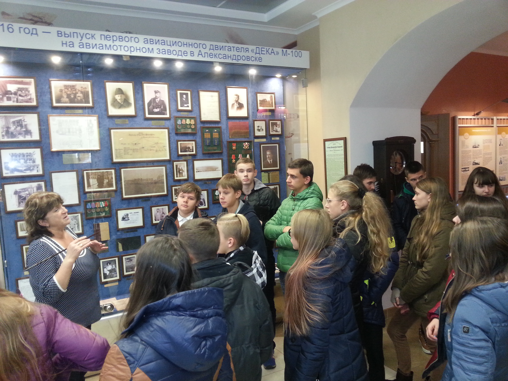
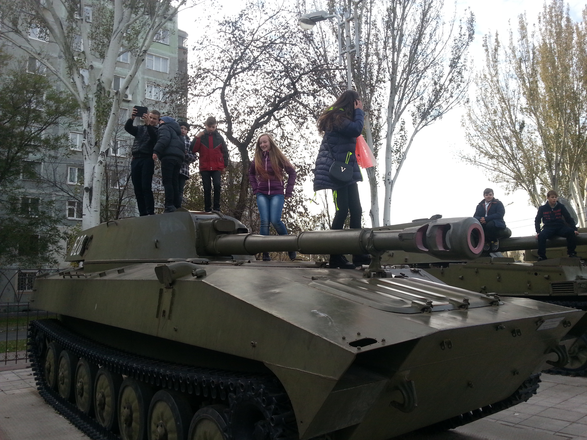

8 клас
Подорож до Запоріжжя
Екскурсія до Запоріжжя була нестандартною.
Ми відвідали першу гідроелектростанцію нашої країни.
Побували в машинному залі і на власні очі побачили роботу турбін.
Після цього ми заїхали до музею ретро-автомобілів.
Ми ніяк не очікували таку велику експозицію старовинного транспорту.
Звісно кожен хотів зробити багато яскравих світлин з багатьма
автомобілями та мотоциклами. Особливо задоволеними були хлопці,
коли дозволили посидіти в таких авто. Ще один музей Запоріжжя нас вразив,
це виставочний зал «Мотор-січ». Таки двигунів для літака ми не бачили ніколи.
Всім хто буде їхати до цього міста ми рекомендуємо відвідати ці музеї.






